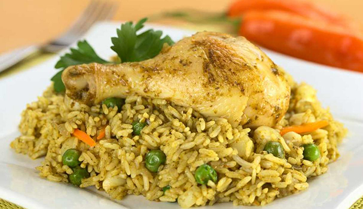
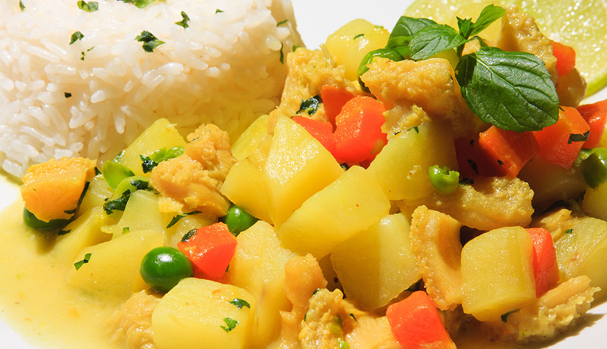
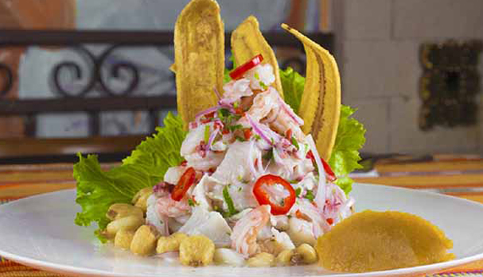
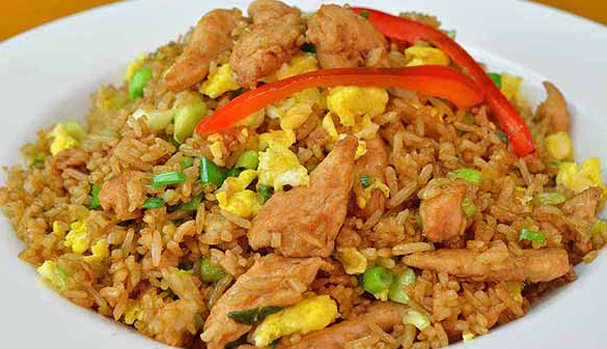
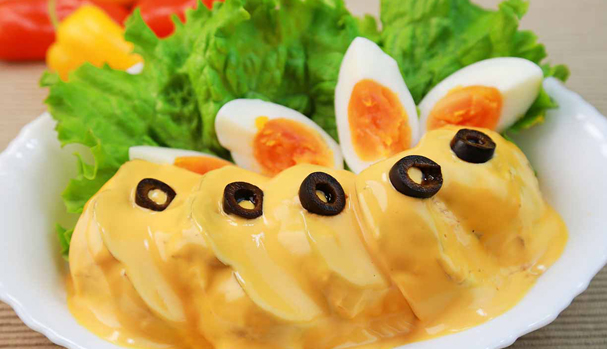
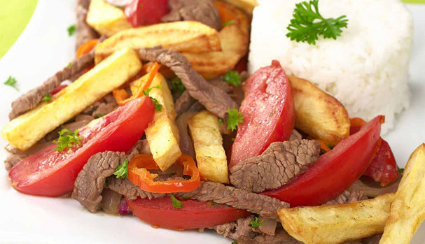

Somos pioneros en la atención de eventos
En Restaurante Le Wiwi nos preocupamos por la calidad
Nos han otorgado por 9 años consecutivos la estrella Michelin
Tenemos presencia en 3 continentes, en más de 20 Paises
Elige el plato que deseas comer hoy
|  |  |  |
|  |  |  |
Para servicios de catering contactese a los siguientes números
3216549870 - 5555554
O visitenos en Avenida Siempre Viva 742